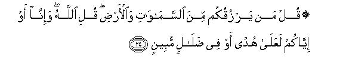

بسم الله الرحمن الرحيم
Sayyid Abul Ala Maududi - Tafhim al-Qur'an - The Meaning of the Qur'an
 34.
Surah Saba (The Sabaeans)
34.
Surah Saba (The Sabaeans)
The Surah takes its name from verse 15 in which the word Saba has occurred, which implies that it is the Surah in which mention has been made of Saba (i. e. the Sabaeans).
The exact period of its revelation is not known from any reliable tradition. However, the style shows that it is either the middle or the early Makkan period. If it is the middle period, it was probably its initial stage when the persecution had not yet become tyrannical and the Islamic movement was being suppressed only by resort to derision and ridicule, rumor mongering, false allegations and casting of evil suggestions in the people's minds.
The Surah deals with those objections of the disbelievers, which they were raising against the Holy Prophet's message of Tauhid and the Hereafter, and about his Prophethood itself, mostly in the form of absurd allegations and taunts and mockery. These objections have been answered, sometimes by citing them and sometimes without citing them, and the discourse itself shows which objection is being answered at a particular place. The answers mostly take the form of instruction and admonition and argument, but at some places the disbelievers have been warned also of the evil consequences, of their stubbornness. In this connection, the stories of the Sabaeans and the Prophets David and Solomon have been related to impress this lesson: "You have both these historical precedents before you. On the one hand, there were the Prophets David and Solomon, who had been blessed by Allah with great powers and such grandeur and glory as had been granted to hardly any people before them. In spite of this, they were not proud and arrogant, but remained grateful servants of their Lord. They were never rebellious. On the other hand, there were the people of Saba, who, when blessed by Allah, became proud, and were consequently so thoroughly destroyed and dispersed as to be remembered only in myths and legends. With these precedents in view, you may see and judge for yourselves as to which bind of the life is better: that which is built on belief in Tauhid and the Hereafter and the attitude of gratefulness to Allah, or that which is based on disbelief and shirk and denial of the Hereafter and the worship of the world."

In the name of Allah, the Compassionate, the Merciful.
[1-2] Praise is for Allah alone Who is the Owner of everything in the Leavens and the earth,1 and the praise is for Him alone in the Hereafter, too.2 He is the All-Wise, the All-Aware.3 He knows whatever goes into the earth and whatever comes out of it; and whatever comes down from the sky and whatever ascends into it: He is the All-Merciful, the All-Forgiving.4
[3-6] The disbelievers say, "How is it that the Resurrection is not coming upon us?"5 Say, "By my Lord, Knower of the Unseen, it shall certainly come upon you.6 Not an atom's weight of anything is hidden from Him, neither in the heavens nor in the earth, nor anything smaller than an atom nor greater than it: everything is recorded in a clear register."7 Resurrection shall take place so that Allah may reward those who have believed and done good works. For them there is forgiveness and a generous provision. As for those who have striven hard to discredit Our Revelations, for them there is a painful torment of the worst kind.8 O Prophet, those who possess the knowledge fully well know that whatever has been revealed to you from your Lord, is the very Truth, and it guides to the Way of the All-Mighty, All-Praiseworthy God.9

[7-8] The disbelievers say to the people, "Shall we point out to you a man who gives the news that when your body will have been scattered into particles, you will be resurrected once again? No one knows whether this man forges a lie in the name of Allah or is mad."10
[9] Nay, but those only, who do not believe in the Hereafter, will incur the punishment and they are involved in gross error.11 Have they never seen the earth, which surrounds them from front and from behind? If We will, We can sink them underground, or cause some fragments of the sky to fall down upon them.12 There is' indeed a Sign in this for every such servant who turns to God.13
[10-11] We had blessed David with a great bounty from Ourself.14 (We commanded:) "O mountains, join with him in glorification," and (the same Command We gave to) the birds.15 We made iron soft for him, saying, "Make coats of mail and set the rings in proper measure."16 (O people of David,) "Do good works: surely I see whatever you do."
[12-13] And for Solomon We subjected the wind which covered a month's journey in the morning and a month's journey in the evening17 and We made a fountain of molten copper to flow for him18 and subdued such jinns to him who served before him by the command of his Lord.19 Whoever from among them swerved from Our Command, We made him taste the brazing Fire. They made for him whatever he desired: lofty edifies, images,20 bowls like troughs and immovable heavy cooking-pots.21 O people of David, work gratefully,22 only a few of My servants are grateful.

[14] Then, when we decreed death for Solomon, there was nothing to inform the jinns of his death except the wood louse which was eating away his staff. So, when Solomon fell down, it became clear to the Jinns23 that if they had known the unseen, they would not have continued in the humiliating torment.24
[15-17] For Saba25 there was a Sign in their own dwelling-place:26 two gardens,27 on the right and on the left: eat of the provisions of your Lord and be grateful to Him: pure and pleasant is the land and Forgiving the Lord. But they turned away.28 Consequently, We sent upon them a flood due to bursting of the dam29 and replaced their two gardens by two other gardens producing bitter fruit and tamarisks and a few lote bushes.30 This was Our retribution for their disbelief and We recompense none with such a retribution except the ungrateful.
[18-21] And We had made between them and the habitations which We had blessed, (other) conspicuous habitations and set between them their traveling distances,31 "Travel on these ways night and day in complete security. " But they said, "Our Lord, make our journeys longer."32 They wronged their own selves. Consequently, We made them mere legends and scattered them utterly.33 Surely there are Signs in this for every patient and grateful person.34 In their case Iblis found his suspicions correct, and they all followed him except for a small group of the believers.35 Iblis did not have any power over them, but whatever happened, it happened because We wanted to see who believed in the Hereafter and who cherished any doubt about it.36 Your Lord is Watchful over everything.37
[22-23] (O Prophet,)38 say (to the mushriks), "Call those whom you worship as deities instead Of Allah.39 They neither own an atom's weigh of anything in the heavens nor in the earth, nor have they anything to share in either, nor is any of them a helper of Allah. And no intercession before Allah can avail anyone except for the one for whom Allah permits it.40 So much so that when dread is gone from their hearts, the people will ask (the intercessors), "What reply did your Lord give?" They will say, '`The right reply! And He is the Exalted, the Great!"41

[24-27] (O Prophet), ask them, "Who gives you sustenance from the Heavens and the earth?" Say, "Allah42 Only either we or you are on the Right Way or in manifest error."43 Say to them, "You will not be questioned for the errors we have committed, nor shall we be answerable for what you are doing."44 Say, "Our Lord will gather us together, then He will judge between us rightly. He is such a great Judge Who knows everything."45 Say to them, "Just show me those whom you have made associates-with Him."46 Nay, never! Allah alone is the All-Mighty, the All-Wise.
[28] And (O Prophet,) We have sent you to the entire mankind as a bearer of good news and a warner, but most people do not know.47
[29-30] These people say to you, "When will the promise (of Resurrection) be fulfilled if you are truthful?"48 Say, "For you the appointment of a day is fixed, which you can neither hold back for an hour nor hasten on by an hour."49
[31-33] The disbelievers say, "We shall never believe in this Qur`an, nor in any other Book which came before it."50 Would that you could see these wicked people at the time when they will be standing before their Lord! Then, they will blame one another. Those who had been oppressed in the world, will say to the arrogant, "But for you we would have been the believers."51 The arrogant ones will say to the oppressed once, "Did we hinder you from the guidance when it came to you? Nay, but you yourselves were guilty."52 The oppressed ones will say to the arrogant ones. "Nay, but it was your plotting by day and night when you told us to deny Allah and to set up others as equals with Him."53 At last, when they will see the torment, they will repent in their hearts, and We shall put fetters on the necks of the disbelievers. Can the people be requited except in accordance with their deeds?
[34-38] It has never happened that We sent a warner to a habitation and its people of means did not say, "We disbelieve the message you have brought."54 They always said this: "We have more wealth and children than you, and we shall never be punished."55 O Prophet, say to them, "My Lord gives abundantly to whom He wills and sparingly to whom He wills, but most people do not realize this."56 It is not your wealth and your children, which bring you nearer to Us, save him who believes and does good works.57 These are the ones who will have a double reward for their deeds, and they will live in peace in high mansions.58 As for those who strive hard in order to frustrate Our Revelations, they shall be severely punished.
[39] O Prophet, say to them, "My Lord gives abundantly to whomever of His servants He wills and sparingly to whom He wills.59 Whatever you spend, He replenishes it by other provisions: He is the best of Providers."60
[40-42] And the Day when He will gather all mankind together, He will ask the angels, "Did they really worship you?"61 They will reply, "Glory be to Thee: our connection is with Thee, not with them.62 They, in fact, worshiped the jinns, not us. It was in them that most of them believed."63 (At that time We shall say:) "Today you can neither help nor harm one another." And to the wrongdoers We shall say, Now taste the torment of Hell which you used to deny."
[43-45] When Our clear Revelations are recited to these people, they say, "This person only wants to turn you away from those deities whom your forefathers have been worshiping." And they say, "This (Qur'an) is only a forged falsehood." When the Truth came before these disbelievers, they said, "This is plain magic," whereas We had neither given them a book before that they might study it, nor sent to them any warner before you.64 Those who have gone before them denied likewise. These people have not attained even a tenth of what We had given them. But when they treated My Messengers as liars, see how severe was My punishment!65

[46-50] O Prophet, say to them, "I shall advise you of one thing: Think hard singly or in twos for the sake of Allah and reflect as to what is there of madness in your companion.66 He is only a warner to you before the coming of a dreadful torment."67 Say to them, "If I have asked you for a reward, keep it with yourselves,68 for my reward is with Allah and He is a witness over everything."69 Say to them, "My Lord inspires (me) with the Truth,70 and He is the Knower of all the hidden realities." Say, "The Truth has come; now falsehood cannot succeed whatever it may do." Say "If I have gone astray, the burden of my going astray is on myself alone, and if I am on right guidance, it is by virtue of what my Lord reveals to me. He hears everything and is - near at hand."71
[51-52] Would that you could see these people when they will be in a state of confusion! They will not be able to escape but will be seized from a place close by.72 Then they will say, "We believe in it,"73 whereas they cannot attain a thing gone far out of hand.74
[53-54] Even before they had disbelieved and used to conjecture without true knowledge.75 At that time they will be deprived of that which they will desire, as will have been deprived their likes before them: Indeed they had been involved in a misleading suspicion.76
1The Arabic word hamd is used both for praise and for gratitude and both the meanings are implied here. When Allah alone is the Owner of the whole universe and of everything in it, then inevitably He alone deserves to be praised for every beauty, perfection, wisdom, power and excellent skill and design shown and manifested by it. Therefore, every inhabitant of the world must thank Allah alone for any benefit and pleasure that he draws from anything here. For when no one else is a partner in the ownership of these things, no one else deserves to be praised or thanked.
2That is, "Just as every blessing in this world is granted by Allah alone, so in the Hereafter also whatever a person will get, he will get from His treasures and by His grace. Therefore, in the Hereafter too, Allah alone deserves to be praised as well as thanked. "
3That is, "All His works are based on perfect wisdom and knowledge. Whatever He does, He does right. He has full knowledge about every creation of His as to where it is, in what state it is, what are its requirements, what precisely needs to be done for its well-being, what it has done so far and what it will do in the future. He is not unaware of the world created by Himself, but is fully aware of the condition and state of every particle in it. "
4That is, "If a person (or persons) is not being seized in spite of rebellion against Him in His Kingdom, it is not because this world is a lawless kingdom and Allah is ruler, but because Allah is an inept All-Merciful and All-Forbearing, Although it lies in His power to seize the sinner and the wrongdoer immediately on the commission of sin, to withhold his sustenance, to paralyze his body, and to put rum to death suddenly, yet He does not do so. It is the demand of His Beneficence that" in spite of being All-Powerful He gives the disobedient servant plenty of rope and enough respite to mend his ways and as soon as he desists from his evil ways, He pardons and forgives him. "
5This they said satirically and mockingly. What they meant was: "This Prophet has been giving us the news of his coming of Resurrection for along tune now, but Resurrection has not overtaken us so far although we have openly denied and rejected him as a Prophet, have been insolent to him and have ridiculed him in every way."
6The use of the attribute "Knower of the unseen" for Allah while swearing by him by itself points to the fact that the coming of Resurrection is certain, but no one knows except Allah, Knower of the unseen, when exactly it will come. This same theme has been explained at different places in the Qur'an in various ways. For details, see AI-A'raf: 187, Ta Ha: 15. Luqman: 34, Al-Ahzab: 63, Al-hulk: 25-26, An-Naziyat: 42-44.
7This is one of the arguments for the possibility of the Hereafter as is being stated in verse 7 below. One of the reasons why the deniers of the Hereafter regarded the life-after-death as irrational was ;' They said that when all human beings will have become dust after death, and scattered away in particles, how it will be possible to bring all the countless particles together and combine them to be re-created as the same human bodies once again. This doubt has been dispelled, saying, "Every particle wherever it is, is recorded in God's Register, and God knows where a particle is. Therefore, when He wills to recreate, He will not face any difficulty in gathering together all the particles of the body of each and every man. "
8The above was an argument for the possibility of the Hereafter: this is an argument for its need and necessity. It means: A time must come when the wicked should be requited for their wickedness and the righteous rewarded for their righteousness. Reason wants and justice demands that a worker of goodness should be rewarded and a worker of evil punished. Now when you see that in the present worldly life neither is an evildoer fully requited for his evil nor a worker of goodness for his goodness, rather there are opposite results of evil and goodness in most cases, you should admit that this necessary demand of both reason and justice must be fulfilled at some time in the future. Resurrection and the Hereafter will be the same time. It is not its coming but its not coming which is contrary to reason and against justice.
In this connection, another point becomes evident from the preceding verses. They tell that the result of faith and righteous acts is forgiveness and a bounteous provision, and for those who strive and act antagonistically in order to discredit and defeat Allah's Religion, there will be a torment of the worst kind. This makes it manifest that he who believes sincerely will not be deprived of forgiveness even though he may not get a bounteous provision owing to some flaw or weakness in his deeds. And the one who is a disbeliever but who does not adopt an attitude of enmity and antagonism towards the true Faith, will not be able to avoid the torment but he will be saved from the worst torment.
9That is, "These antagonists cannot succeed in their object to prove the truth presented by you false, however hard they may try, for they can only delude and misguide the ignorant people by their designs. Those possessed of knowledge cannot be deceived by them. "
10The chiefs of the Quraish knew full well that it was extremely difficult for the common people to accuse Muhammad (upon wham be Allah' peace) of being a liar, for the whole nation knew that he was a completely truthful person, and no one had ever heard a lie from him all his life. Therefore, they presented their charge against him before the people like this: 'When this person utters an impossible thing like the life-after-death from his mouth, he is either uttering (God forbid) a falsehood deliberately, or he is mad.' But this accusation of madness also was as absurd as of falsehood, for a stupid person only could admit that such a wise and intelligent man as the Holy prophet could be mad. That is why Allah did not feel it was necessary to refute their absurd charge by an argument, and only made mention of their wonder which they expressed at the possibility of the life-after-death
11This is the first answer to their charge. It means: "O foolish people, it is you who have lost your reason. For you do not listen to the one who is informing you of the truth and arc recklessly galloping on the way that leads to Hell. But the height of your stupidity is that you are calling the one who is anxious for your salvation, mad."
12This is the second answer to their charge. To understand it well one should bear in mind the fact that three things were most prominent among the reasons for which the disbelieving Quraish denied the life-after-death: (1) They did not want to believe in any kind of accountability before God, for after believing in such a thing they would be left with no freedom whatever to behave and act as they pleased in the world. (2) They thought it was inconceivable that Resurrection would take place and the present material order of the universe would be destroyed and replaced by a new order. (3) They thought it was impossible that the people who had died hundreds of thousands of years in the past and whose bones even had decayed and disintegrated, would be raised back to life. With the same body and soul. The answer given above covers all these three aspects, and contains a severe warning as well. The details of the theme contained in these brief sentences are given below:
(1) If you ever had observed this earth and the heavens with clear sightedness, you would have seen that it is not a plaything nor has its creation come into being by accident. Everything in this universe points to the fact that it has been created by an All-Powerful Being with great wisdom. In such a wise system it would be highly absurd to think that somebody could be left to live an irresponsible and unaccountable life after he had been given the faculties of intellect and discrimination and authority.
(2) Anyone who sees the natural order with discerning eyes will realize that the occurrence of Resurrection is not at all difficult. It can take place suddenly as soon as the system in which the earth and the heavens are bound together is disturbed. And the same system testifies that the One Who has made and is running this world today can create another world again. If it were difficult for Him to do so, this world would not have existed as it does today.
(3) Your opinion and judgment about the Creator of the universe that it will be impossible for Him to resurrect the dead, is strange. The bodies of the men who die may utterly decay and disintegrate and be scattered but nevertheless remain within the bounds of this very universe and do not go anywhere outside its bounds. Then it is not at all difficult for the God Who has created this earth and the heavens to gather together everything from the earth and water and air wherever it happens to be. Whatever makes up your body today was collected and combined by Him, and brought out from this very earth, water and air. When the collecting and assembling of these elements together is possible today, how will it be impossible tomorrow?
Besides these three arguments, the discourse also contains a subtle warning to the effect: "You arc surrounded by God's Kingdom on all sides. Wherever you may go, you would be covered and surrounded by the same universe. You cannot find any place of refuge against God, and God's power is such that He can afflict you whenever He likes with a calamity from under your feet or from above your heads. You do not know what forces might be working under the very surface of the earth which you find as an abode of perfect peace and safety for yourselves, and when they would cause an earthquake to take place and turn the' same earth into your grave. You do not know when a disaster might befall you-a lightning. or a devastating rain, or some other calamity-from the same sky under which you walk about with full peace and satisfaction of the heart as if it were the ceiling of your own house. In a state like this, your fearlessness of God, your heedlessness of any thought of the Hereafter and your vain and nonsensical talk against the admonition of a well-wisher has no other meaning than that you are only inviting your own doom."
13That is, "The person who is neither prejudiced nor obstinate and stubborn, but is a sincere seeker of guidance from his God, can learn many lessons from the observation of the earth and heavens; but the one whose heart is turned away from God, will sec everything in the universe, but will never perceive any Sign pointing to the Truth."
14This is an allusion to the countless favors with which Allah had blessed the Prophet David. He was an ordinary young man of the tribe of Judah, living at Bethlehem. In a campaign against the Philistines he slew the giant Goliath, the great enemy of Israel, and suddenly grew in esteem of the Israelites. With this event began his rise to prominence; so much so that after the death of Saul he was first elected king of Judah in Hebron (mod. AI-Khalid, and then a few years later he was made king over all the tribes of Israel. He took Jerusalem and made it the capital of the kingdom of Israel. It was under his leadership that for the first time in history a God-worshiping kingdom was established, whose boundaries extended from the Gulf of `Aqabah to the western banks of the River Euphrates. In addition to these favors, he was further graced with Divine bounties in the form of knowledge and wisdom, and the qualities of justice and mercy and devotion to the truth. (For details, see E.N. 273 of Al-Baqarah and E.N. 7 of Bani Isra'il).
15For this please refer to AI-Anbiya': 79 and E.N. 71 thereof.
16For this also please refer to AI-Anbiya': 80 and E.N. 72 thereof.
17For this also please refer to Al-Anbiya: 81 and E.N. 74 thereof.
18Some former commentators have taken this to mean that a spring from the earth had erupted for the Prophet Solomon from which molten copper flowed oat instead of water. But another interpretation of this verse can be that in the time of the Prophet Solomon the work of melting and molding copper for different uses was done on a very large scale and the same has been referred to here as the flowing of a spring of molten copper for him. (For further details, see E.N. 74 of AI-Anbiya').
19The question whether the jinns who had been subdued to the Prophet Solomon were human beings of the mountain tribes or really the jinns who are well known by this name as the hidden creation, has been discussed in detail in our commentary of Surah AI-Anbiya' and Surah An-Naml. (Please see E.N. 75 of AI-Anbiya' and E.N.'s 23, 45 and 52 of An-Naml).
20The word tamathil in the Text is the plural of timthal, which in Arabic is used for every such thing as is made to resemble a natural thing, whether it is a human being, an animal, a tree, a flower, a river, or some inanimate object. Timthal is the name of every artificial thing which may have been made to resemble something made by God. " (Lisan al- Arab). "Timthal is every such picture which may have been made to resemble the likeness of something else, whether living or dead." (The Commentary, Al-Kashshaf). On this basis the statement of the Qur'an does not necessarily imply that the "images" made for the Prophet Solomon were the pictures or images of human beings and animals. They might have been floral designs or natural landscape or different kinds of decorations with which the Prophet Solomon might have decorated his buildings and works.
The misunderstanding has been created by some commentators who have stated that the Prophet Solomon had got the pictures of the Prophets and the angels made for himself. They took such things from the Israelite traditions and then explained them saying that in the former Shari'ahs it was not forbidden to make the pictures. But while accepting and citing these traditions without question, these scholars did not keep in mind the fact that the Prophet Solomon was a follower of the Mosaic Law and in that Law also making of the pictures and images of human beings and animals was forbidden as it is in the Shari'ah of Muhammad (upon whom be Allah's peace). And they also did not remember that because of the enmity which a section of the Israelites bore against the Prophet Solomon they have accused him of crimes like polytheism, idolatry, sorcery and adultery. Therefore. one should not place reliance on the Israelite traditions and accept anything about this great Prophet, which might contradict any Shari'ah enjoined by God. Everyone knows that all the Prophets who came after the Prophet Moses till the Prophet Jesus among the Israelites were the followers of the Torah, and none of them had brought forth a new law, which might have abrogated the Law of the Torah. Now the Torah clearly enjoins repeatedly that making of the pictures and images of human beings and animals is absolutely forbidden.
"Thou shalt not make unto thee any graven image, or any likeness of any thing that is in the heaven above, or that is in the earth beneath, or that is in the water under the earth." (Exod., 20: 4) "Ye shall make you no idols nor graven image, nor rear you up a standing image, neither shall ye set up any image of stone in your land, to bow down unto it." (Levit., 26: 1)
'Lest ye corrupt yourselves, and make you a graven image, the similitude of any figure, the likeness of male or female. The likeness of any beast that is on the earth, the likeness of any winged fowl that flieth in the air. The likeness of any thing that creepeth on the ground, the likeness of any fish that is in the waters beneath the earth." (Deut., 4: 16-18).
"Cursed be the man that maketh any graven or molten image, an abomination unto the Lord, the work of the hands of the craftsman, and putteth it in a secret place." (Deut., 27: 15).
In the face of these clear and express injunctions how can it be accepted that the Prophet Solomon might have employed the jinns to make pictures and images of the Prophets and the angels for him? And how can this thing be admitted on the authority of the statements of the Jews who accuse the Prophet Solomon of idolatry due to his love for polytheistic wives? (t Kings, oh., 11).
However, the Muslim commentators, while citing the Israelite traditions, had made it clear that in the Shari'ah of Muhammad (upon whom be Allah's peace) this thing is forbidden; therefore, it is no more lawful for anybody to make pictures and images in imitation of the Prophct Solomon. But some people of the modern time, who want to make photography and carving of idols lawful in imitation of the West, took this verse of the Qur'an as an argument for themselves. They argue like this: "When a Prophet of Allah has done this and Allah Himself has mentioned this act of the Prophet in His Book, and has expressed no disapproval of it either, it must be lawful . "
This argument of these followers of the West is wrong for two reasons. First, the word tamathil that has been used in the Qur'an, does not explicitly give the meaning of the human and animal pictures, but it applies to the pictures of lifeless things as well. Therefore, only on the basis of this word, it cannot be concluded that it is lawful to make the human and animal pictures according to the Qur'an. Secondly, it is established by a large number of the Ahadith, which have been reported through authentic chains of transmitters, and commonly reported by many authorities, that the Holy Prophet absolutely forbade the making and keeping of the pictures of the living things. In this connection, we reproduce below the authentic Traditions of the Holy, Prophet and the verdicts given by the eminent Companions:
(1) Mother of the faithful Hadrat `A'ishah has reported that Hadrat Umm Habibah and Hadrat Umm Salamah had seen a church in Habash, which had pictures in it. When they mentioned this before the Holy Prophet, he said: "The custom among those people was that when a pious man from among them died, they would build a house of worship at his grave and would make his pictures in it. On the Day of Resurrection, these people will be among the most wretched creatures in the sight of Allah." (Bukhari: Kitab as-Salat,' Muslim: Kitab al-Masajid; Nasa`i: Kitab al-Masajid).
(2) Abu Hujaifah has reported that the messenger of Allah has cursed the maker of pictures. (Bukhari Kitab al-Buyu', Kitab at-Talaq, Kitab alLibas).
(3) Abu Zur'ah says, "Once when I entered a house along with Hadrat Abu Hurairah I saw that a painter was making pictures at the top. Thereupon, Hadrat Abu Hurairah said, 'I have heard the Holy Prophet say: Allah says who could be more wicked than the one who tries to create a thing like My creation? Let them, if they can, create a seed or an ant'." (Bukhari: Kitab al-Libas; Musnad Ahmad. According to the tradition in Muslim, this was the house of Marwan).
(4) Abu Muhammad Hudhali has reported on the authority of Hadrat `Ali: The Holy Prophet was present at a funeral prayer when he said: Who from among you would go to Madinah and demolish every idol that he sees, and level down every grave that he sees, and blot out every picture that he sees. A man said that he would go. So he went but came back without carrying out the task due to fear of the people of Madinah. Then Hadrat `Ali submitted that he would go, and the Holy Prophet allowed him to go. Hadrat `Ali went, then came back and said: I have demolished every idol and leveled down every grave and blotted out every picture. Thereupon the Holy Prophet said: "Now if any one made any of these things, he would be denying the teaching sent down on Muhammad (upon whom be Allah's peace)." (Musnad Ahmad; Muslim: Kitab al-Jana 'iz; Nasa' i (Kitab al-Jan 'iz) also contain a Tradition on the same subject).
(5) Ibn `Abbas has reported: ".....And he who made a picture would be chastised and compelled to breathe the soul into it, which he will not be able to do." (Bukhari: Kitab al-Ta 'bir, Tirmidhi: Abwab al Libas; Nasa`i: Kitab az-Zinah; Musnad Ahmad).
(6) Said bin al-Hasan says: "I was sitting with Ibn `Abbas when a man came and said: O Ibn `Abbas, I am a man who earns his living with his hand, and my profession is to make these pictures. Ibn `Abbas replied: I shall say to you the same that I have heard from the Holy Prophet. I have heard this from him that Allah will chastise the one who makes pictures, and . will not leave him till he breathes the saul into it, and he will never be able to breathe the soul into it. At this the man was much upset and his face turned pale. Ibn `Abbas said: Well, if you have to make the pictures, make of this tree, or of something which is lifeless. " (Bukhari: Kitab al-Buyu'; Muslim: Kitab al-Libas; Nasa`i; Kitab al-Zinah; Musnad Ahmad).
(7) "Abdullah bin Mas'ud has reported that the Holy Prophet said: "On the Day of Resurrection the ones to be most severely punished by Allah would be the painters of the pictures. "(Bukhari: Kitab al-Libas; Muslim: Kitab al-Libas; Nasa`i; Kitab al-Zinah; Musnad Ahmad).
(8) 'Abdullah bin `Umar has reported that the Holy Prophet said: Those who paint the pictures will be punished on the Day of Resurrection. They will be asked to put life into what they have made. (Bukhari: Kitab al-Libas; Muslim: Kitab al-Libas; Nasa`i; Kitab al-Zinah; Musnad Ahmad).
(9) Hadrat 'A'ishah says that she bought a cushion in which pictures had been painted. Then the Holy Prophet came and stood at the door and did not enter. I said: "I repent before God of any sin that I may have committed." The Holy Prophet asked: "What is this cushion for?" I said: "This is here so that you may sit and may recline on it." He said: "The painters of these pictures will be chastised on the Day of Resurrection: they will be asked to put life into what they have made; and the angels (i. e. the angels of mercy) do not enter a house which has pictures in it. "(Bukhari; : Kitab al-Libas; Muslim: Kitab al-Libas; Nasa`i: Kitab az-Zinah; Ibn Majah: Kitab at-Tajarat; Mu`watta': Kitab al-Istidhan).
(10) Hadrat `A'ishah says: Once the Holy Prophet came to my house, and I had hung a curtain which had pictures on it. The colour of his face changed. Then he took hold of the curtain and tore it and said: "Those who try to create like the creation of Allah will be among, those who will be severely punished by Allah on the Day of Resurrection." (Muslim: Kitab al-Libas; Bukhari: Kitab al-Libas; Nasa`i: Kitab az -Zinah).
(11) Hadrat `A'ishah says: Once the Holy Prophet came back; from a journey and I had hung a curtain at my door, which had the pictures of winged horses on it. The Holy Prophet commanded me to remove it and I removed it. (Muslim: Kitab al-Libas, Nasa'i: Kitab al-Zinah).
(12) Jabir bin `Abdullah says: The Holy Prophet prohibited keeping of the pictures in the house and also forbade that somebody should make pictures. (Tirmidhi: Abwab al-Libas).
(13) Ibn `Abbas has related on the authority of Abu Talhah Ansari: The Holy Prophet said that the angels (i.e. of mercy) do not enter a house where there is a dog, nor where there is a picture. (Bukhari: Kitab al-Libas).
(14) 'Abdullah bin `Umar says: Once Gabriel promised to pay the Holy Prophet a visit, but the time passed and he did not come. The Holy Prophet felt troubled and came out of his house and met him. When he complained to him, he (Gabriel) replied: "We do not enter a house where there is a dog or a picture. " (Bukhari: Kitab a/-Libas. Several Traditions on this subject have been related by Bukhari, Muslim, Abu Da`ud, Tirmidhi, Nasa'i, Ibn Majah, Imam Malik and Imam Ahmad on the authority of several Companions).
As against these, there are some other Traditions which allow some exceptions regarding the pictures. For example, according to a tradition of Abu Talhah Ansari, it is permissible to hang the curtain of a cloth which has pictures embroidered on it. (Bukhari: Kitab al-Libas); and according to Hadrat 'A'ishah's tradition, when she tore a cloth having pictures on it and made a cushion from it to be spread on the floor, the Holy Prophet did not forbid it. (Muslim: Kitab al-Libas); and Salim bin `Abdullah bin `Umar's tradition that the prohibition is of the picture which is displayed and installed prominently and not of the one which is used as a carpet: (Musnad Ahmad). But none of these traditions contradicts the Traditions which have been cited above. None of these sanctions the making and painting of the pictures. They only tell that if a person has got a piece of cloth having pictures on it, how he should use it. In this regard, the tradition of Abu Talhah Ansari cannot at all be accepted because it contradicts many, other authentic Traditions in which the Holy Prophet not only forbade use of cloth having pictures on it as a curtain but even tore it into pieces. Moreover, Hadrat Abu Talhah Ansari's own practice that has been reported in Tirmidhi and Mu'watta', in this regard, was that he did not even like to use a piece of cloth which had pictures on it, as a carpet, not to speak of hanging it as a curtain.
As for the traditions related by Hadrat `A'ishah and Salim bin `Abdullah. they only permit that if a picture is not placed prominently out of respect and esteem but is used as a carpet disrespectfully and is trodden under the feet, it could be tolerable. After all, how can these Traditions be cited for obtaining sanction for the culture which regards the art of painting and portrait making and sculpture as an enviable achievement of the human civilization, and wants to popularize it among the Muslims?
The code of practice that the Holy Prophet left for his Ummah with regard to the pictures, Can be seen from the conduct and practice of the eminent Companions, which they adopted in this regard. The admitted principle of law in Islam is that the authentic and reliable Islamic Law is that which the Holy Prophet enjoined during the latter part of his life after it had passed through gradual and preliminary injunctions and exceptions. And after the Holy Prophet the eminent Companions' practice and persistence on a particular way is a proof that he left the Ummah on that way. Now Iet us sec how these holy and pious people treated and regarded the picntres.
Hadrat 'Umar said to the Christians: "We do not enter your churches because there are pictures in them. " (Bukhari: Kitab as -Salat).
Ibn 'Abbas would sometimes offer his Prayer in the church, but not in a church which had pictures in it. (Bukhari; : Kitab as-Salam).
Abu al-Hayyaj al-Asadi says: Hadrat 'Ali said to me: "Should I not send yon on the same mission on which the Holy Prophet had sent me? And it is this that you should not leave any idol that you should not break, and you should not leave any grave that you should not level down, and you should not leave any picture that you should not blot out." (Muslim: Kitab al-Jana'iz; Nasa'i: Kitab al .lane 'iz).
Hanash al-Kinani says: Hadrat 'AIi said to his chief of the police: "Do you know on what mission I am going to send you?-on the mission on which the Holy Prophet had sent me, that you should blot out every picture and level down every grave.' (Musnad Ahmad).
This very established Law of Islam has been accepted and acknowledged by the jurists of Islam and regarded as an article of the Islamic Law. Thus, 'Allama Badruddin 'Aini writes with reference to Tauhid.'
"Our elders (i. e. the Hanifite jurists) and other jurists say that making the pictures of a living thing is not only unlawful but strictly forbidden and a major sin, whether the maker has made it for a purpose where it would be held with contempt or for some other use and purpose. The making and painting of the picture anyway is unlawful, because it is an attempt to create like the creation of Allah. Likewise. the making of pictures whether in the cloth, or in the carpet, or nn a coin, or in a utensil, or in a wall, is in any case unlawful. However, making the pictures of something else, for instance, of a tree, etc., is not forbidden. Whether the picture casts a shadow or not is immaterial. The same is the opinion of Imam Malik, Sufyan Thauri, Imam Abu Hanifah, and other scholars. Qadi Iyad says that the dolls of girls are an exception, but Imam Malik; disapproved of even buying them." (`Umdat al-Qari vol. XXII p. 70). Imam Nawawi has elucidated this same view in greater detail in his commentary of Muslim. Please refer to Sharh Nawawi, Egyptian Ed., vol. XIV, pp. 81-82).
This is then the injunction about the making of pictures. As regards the use of the pictures made by others, `Allama Ibn Hajar has cited the views of the jurists of Islam as follows:
"Ibn 'Arabi, the Malikite jurist, says that the consensus of opinion is that the picture that casts a shadow is unlawful, whether it is regarded with contempt or not. Only the dolls of girls are an exception .. .. Ibn 'Arab; also says that the picture which does not cast a shadow but which persists (as in the printed form, unlike the reflection of a mirror) is also unlawful, whether it is regarded with contempt or not. However, if its head is cut off, or its limbs or parts are separated, it may be used. ... Imam al-Harmayn has cited a verdict according to which a curtain or a cushion having pictures on it may be used, but the picture hung on the wall or ceiling is forbidden, for it would show respect and esteem for it, while the picture on the curtain or cushion, on the contrary, would be held with contempt. ... Ibn Abi Shaibah has related on the authority of 'Ikrimah that the scholars among the immediate followers of the Companions held the opinion that the picture's being in the carpet or cushion is disgraceful for it; they also opined that the picture hung prominently is unlawful, but the one trodden under the feet is permissible. The same opinion has been cited from Ibn Sirin, Salim bin 'Abdullah, 'Ikrimah bin Khalid and Said bin Jubair." (Fath al-Bari, vol. X, p. 300).
The details given above clearly show that the forbiddence of the pictures is not a controversial or doubtful matter in Islam, but it is an established article of the law according to the express instructions of the Holy Prophet, the practice of the Companions and the unanimous verdicts of the jurists of Islam, which cannot be changed by the hairsplitting of the people influenced by the alien cultures.
In this connection, certain other things should also be understood so that there remains no misunderstanding in this regard.
Some people try to make a distinction Between a photograph and a painting, whereas the Shari ah forbids the picture itself and not any process or method of making pictures. There is no difference between a photograph and a painting: they are both pictures. Whatever difference is there between them is due to the method of making them, and in this regard the Shari'ah injunctions make no difference between them.
Some people give the argument that the picture was forbidden in Islam 'in order to put an end to idol-worship. As there is no such danger now, this injunction should be annulled. But this argument is absolutely wrong. In the first place, nowhere in the Traditions has it been said that the pictures have been made unlawful in order to avoid the danger of shirk and idol-worship. Secondly, the assertion that shirk and idol-worship have been eradicated from the world is also baseless. Today in the Indo-Pak sub-continent itself there are millions of idol worshipers and polytheists. Shirk is being practiced in different regions of the world in different ways. The Christian people of the Book also are worshiping the images and portraits of the Prophet Jesus and Mary and other saints; so much so that even a large number of the Muslims also are involved in the evil of worshiping others than God.
Some people say that only those pictures which are polytheistic in nature should be forbidden, i. e. , pictures and images of those persons who have been made gods. As for the other pictures and images there is no reason why they should be forbidden. But the people who argue like this, in fact, become their own law-givers instead of deriving law from the Commandments and instructions of the Law-Giver, They do not know that the picture does not become the cause of polytheism and idol-worship only but has become the cause of. many other mischiefs in the world, and is becoming so even today. The picture is one of those major means by which the aura of greatness of the kings, dictators and political leaders has been impressed upon the minds of the common people. The picture also has been used extensively for spreading obscenity and today this mischief has touched heights unknown to previous history. Pictures have also been used for sowing discord and hatred and for creating mischief between the nations and for misleading the masses in different ways. Therefore, the view that the Law-Giver forbade the picture only in order to eradicate idol-worship is basically wrong. The Law-Giver has absolutely forbidden pictures of the living things. If we are not our own law-givers but are the followers of the-Law-Giver, we should desist from this accordingly. It is not at all lawful for us that we should propose from ourselves a basis for a particular injunction and then, on the basis of it, should declare some pictures lawful and some as unlawful.
Some people refer to some apparently "harmless' kinds of pictures and say that there could be no danger from these: they could not cause the mischiefs of shirk, obscenity, political propaganda or other evils; therefore, they should not be forbidden. Here again the people commit the same error: they first propose a cause and a basis for an injunction, and then argue that when the cause is not found in a particular forbidden thing, it should not be forbidden. Furthermore, these people also do not understand the rule of the Islamic Shari ah that it does not make vague and ambiguous boundaries between the lawful and the unlawful from which a man may not be able to judge when he is within the bounds and when he has crossed them; but it draws a clear line of demarcation which every person can see like the broad daylight. The demarcation in respect of the picture is absolutely clear: pictures of living things are unlawful and of the lifeless things lawful. This line of demarcation does not admit any ambiguity. The one who has to follow the injunctions can clearly know what is permissible for him and what is not. But, if some pictures of the living things had been declared lawful and some unlawful, no list of the two kinds of the pictures however extensive, would have made the boundary between the lawful and the unlawful clear, and the case of many pictures would still have remained ambiguous as to whether they were within the bounds of lawfulness or outside them. This is similar to the Islamic injunction about wine that one should completely abstain from it, and this marks a clear limit, Hut, if it had been said that one should abstain from such a quantity of wine as intoxicates, it would be impossible to demarcate between the lawful and the unlawful , and no one would have been able to decide what quantity of wine he could drink; and where he had to stop. (For a further discussion, see Rasa 'iI-o-Masa'il, Part 1, pp. 152-155).
21This gives an idea of the generous and large scale hospitality practiced by the Prophet Solomon. Big bowls like troughs had been arranged to serve as containers of food for the guests and heavy cooking pots were meant for cooking food for thousands of the people at one and the same time.
22"Work gratefully": work like grateful servants. The mere verbal thankfulness of a person who acknowledges only verbally the favors done by the benefactor but uses them against his will is meaningless. The truly grateful person is he who acknowledges the favors with the tongue as well as uses and employs the favors according to the will of the benefactor.
23Another meaning of the sentence can be: "The true state and condition of the jinns became clear and exposed. " According to the first meaning, it will mean: "The jinns realized that their claim to have the knowledge of the unseen was wrong. " According to the second, it will mean: "The people who thought that the jinns possessed the knowledge of the unseen, came to know that they had no such knowledge."
24Some modern commentators have interpreted it as follows: As the Prophet Solomon's son, Rehoboam, was unworthy and given to luxurious living and surrounded by flatterers, he could not sustain the heavy burden of responsibility that fell on his shoulders after the death of his great father. A short time after his succession, the kingdom collapsed, and the frontier` tribes (i. e. , of the jinns) whom the Prophet Solomon had subdued by his mighty power, rebelled and broke away. But this interpretation does not at all conform to the words of the Qur'an. The scene depicted by the words of the Qur'an is somewhat like this: Death came to the Prophet Solomon in a state when he was standing or sitting with-the support of a staff. His body stood in place due to the staff, and the jinns continued to perform their duties and services, thinking that he was living. At last, when the wood-louse started eating away the staff and it became hollow from within, the Prophet Solomon's body fell down; then the jinns realized that he had died. After all, why should this clear and unambiguous description of the event be construed to mean that the wood-louse implied the unworthiness of the Prophet Solomon's son, and the staff implied his power and authority and the falling down of his body implied the disintegration of his kingdom? Had Allah meant to say all this, there was no dearth of the words in the vast Arabic language. The Qur'an, in fact, has nowhere used such enigmatic language. How could the common Arabs, who were its first addressees, have solved this riddle?
Then, the most absurd part of this interpretation is that according to it the jinns imply the people of the frontier tribes whom the Prophet Solomon had subdued to perform certain services under him. The question is, which of these tribes had claimed to have the knowledge of the unseen, and whom did the mushriks regard as the knower of the unseen? A person who reads the last words of the verse with open eyes can himself see that jinn here necessarily implies a group of beings who either had themselves made a claim to have the knowledge of the unseen, or who, the people believed, had the knowledge of the unseen; and the secret of this group's being ignorant and unaware of the unseen became disclosed when they continued to serve the Prophet Solomon under the impression that he was living, whereas he had died. This statement of the Qur'an was enough to induce an honest person to revise his this opinion that the jinn imply the frontier tribes, but the people who feel shy of admitting the existence of the hidden creation called the jinn before the materialistic world stilt insist on this interpretation of theirs in spite of the plain meaning of the Qur'an.
At several places in the Qur'an Allah tells that the mushriks of Arabia regarded the jinns as the associates of Allah, and as His children, and used to seek their refuge:
"They set up the jinns as partners with Allah. whereas He has created them. " (Al-An'am:100). "And they have invented a blood-relationship between Allah and the jinns." (As-Saffat: 1S8). "And that, some people from among the men used to seek refuge with some people from among the jinns." (AI-Jinn: 6).
One of their beliefs was that they regarded the jinns as the knowers of the unseen and hidden. and used to turn to them to obtain knowledge of the hidden things. Allah has related this event here in order to repudiate this belief and to make the Arabs realize that they are following the false creeds of ignorance without any valid reason, whereas the fact is that chest beliefs are absolutely baseless. (For further explanation, see E.N. 63 below).
25To understand the continuity of the subject-matter one should keep in view the theme as expressed in vv.1-9. There it has been pointed out that the pagans of Arabia regarded the coming of the Hereafter as irrational, and declared openly that the Messenger who was presenting this doctrine was either a mad man or deliberately was fabricating falsehood. In reply to this, Allah first gave some rational arguments, which we have elaborated in E.N.'s 7, 8 and 12 above. Then in vv . 10-21 the story of the Prophets David and Solomon and of Saba has been related as an historical argument, which is meant to impress the reality that the history of the human species on the earth itself testifies to the law of retribution. If man studies his own history carefully he will see that this world is not a lawless kingdom, which might be functioning blindly, but it is being ruled by an All-Hearing and AII-Seeing Being, Who treats and deals with His grateful servants in one way and with the ungrateful and thankless people in quite another way. If one wants one can learn this lesson from the same history that in the Kingdom of God which has such a character, goodness and evil cannot have one and the same result. The necessary demand of its justice is that a time must come when goodness should be fully rewarded and evil fully punished.
26That is, "A Sign of this that whatever they have is the gift of some one else and not of their own creation, and a Sign of this that the one worthy of their service and worship and gratitude is that God Who has blessed them with these favors and not those who have no share in bestowing these, and a Sign of this that their wealth is not imperishable but can perish even as it has been amassed".
27This does not mean that there were only two gardens in the whole country, but that the entire land of Saba was like a garden. Wherever a man stood, he could see a garden on his right and a garden on his left.
28That is, "They adopted the way of disobedience and ingratitude instead of obedience and gratefulness."
29The word 'arim as used in sayl al- arim in the Text is derived from the South Arabic word ariman, which stands for a "dam". In the ancient inscriptions that have been unearthed in the ruins of the Yemen, this word has been commonly used in this meaning. For example, in an inscription dated 542 or 543 A.D., which Abraha, the Abyssinian governor of the Yemen, had got installed after the repairs to the great dam of Maa`rib, this word has been used repeatedly in the meaning of a dam. Therefore, sayl al- arim implies a flood that comes when a dam breaks.
30That is, "As a result of the flood that came after the dam burst, the whole land was laid waste. The canals which the Sabaeans had dug out by building dams between the mountains, were ruined and the irrigation system destroyed. Then the same land which had been like a garden before, became a jungle of wild growth and no eatable plants were left in it except the small plumlike fruit of the lote bushes."
31"Blessed habitations": the lands of Syria and Palestine, which have been generally mentioned in the Qur'an by this title, as for instance, in AI-A'raf: 137, Bani Isra`il: 1, Al-Anbiya`: 71, 81.
"Conspicuous habitations": habitations situated on the highway and not inside the country. It may also mean that the habitations were not very far apart but contiguous so that as the outlying areas of one habitation came to an end those of the other started coming into view.
"Set...distances" implies that from the Yemen to the borders of Syria the whole journey passed through inhabited lands, and the distances between one station and another were known and determined. That makes the distinction between the journey through inhabited land and the journey through uninhabited desert area. In the desert the traveler continues to travel as long as he wills and halts when tired. Contrary to this, in settled areas as the distance between one habitation and the other is well known, the traveler can plan beforehand when he would break his journey, where he would have his midday rest and when he would stay for the night.
32They may not have prayed thus in so many words. As a matter of fact, whoever is ungrateful to Allah for His blessings, oils Allah, as if to say that he is not worthy of those blessings. Likewise, the nation which abuses the bounties of Allah, in fact, prays to Him, as if to say, "Our Lord, withdraw Your blessings from us: we are not worthy of these ."
Moreover, the words in the Text also seem to suggest that the Sabaeans perhaps regarded their large population as a calamity for themselves, and they also wanted like the other foolish people that their population should fall.
33That is, "The people of Saba were so dispersed in all directions that their dispersion became proverbial. Even today when the Arabs have to mention the complete Dispersion of any people they refer to the people of Saba as an example. When Allah caused His blessings to be withdrawn from them, the different tribes of the Sabaeans started leaving their homes and migrating an other parts of Arabia. The Banu Ghassan went to settle in Jordan and Syria, the Aus and Khazraj in Yathrib, and the Khuza`ah in Tihamah near Jeddah. The Azd left for 'Uman and the Bani Lakhm and Judham and Kindah were also forced to give up their homes for other places. Thus, the "Sabaeans" ceased to exist as a nation and became a mere legend. "
34In this context the "patient and grateful person" implies every such person (or persons) who does not lose his balance after he has received blessings from Allah, nor exults at prosperity, nor becomes heedless of God Who has blessed him with these. Such a person can learn great lessons from the history of those people who adopted the way of disobedience after attaining opportunities for progress and prosperity and ultimately met with their doom.
35History shows that in ancient times there lived among the Sabaeans a small group of the people, who believed in one God, apart from all other gods. The inscriptions that have been discovered in the ruins of Yaman as a result of modern archaeological research point to the existence of this small element. Some inscriptions of the period about 650 B.C. indicate that at several places in the kingdom of Saba there existed such houses of worship as were exclusively meant for the worship of dhu-samavi or dhu-samavi (i.e. Rabb as-Sama': Lord of the heavens). In some places this Deity has been mentioned as Makkan dhu-samavi (the King who is the Owner of the heavens). This remnant of the Sabaeans continued to live in Yaman for centuries afterwards. Thus, in an inscription of 378 A.D. also there is found the mention of a house of worship built in the name of Ilah dhu-semevi'. Then, in an inscription dated 465 A.D. the words are; Bi-nasr wa rida ilah-in ba'l samin wa ardin (i.e. with the help and support of that God Who is the Owner of the heavens and the earth). In another inscription of the period dated 458 A.D., the word Rahman has been used for the same God, the actual words being bi-rida Rahmanan (i. e. with the help of Rehman).
36That is, Iblis did not have the power to have forcibly misled these people to the way of God's disobedience although they had wanted to adopt His obedience. Allah had only given him the power that he may seduce and mislead them and make all such people his followers, who may like to follow him of their own accord. And Iblis was provided these opportunities for seduction so that the believers of the Hereafter were distinguished from those who entertained doubts about its coming. "
In other words, this Divine statement makes the truth explicit that nothing in this world other than belief in the Hereafter can ensure man's adherence to the right way. If a man disbelieves that he is to be raised back to life after death and has to render an account of his deeds before his God, he will certainly be misled and go astray, for he will never be able to develop in himself the sense of .responsibility which alone can make him adhere to the right way. That is why the artifice of Satan by which he ensnares man is that he makes him heedless of the Hereafter. The one who escapes this satanic enticement can never agree that he should sacrifice the interests of his real everlasting life to the interests of the transient life of the world. On the contrary, the one who disbelieves in the Hereafter under the evil influence of Satan, or at least entertains doubts about it, can never be induced to withdraw from the cash bargain being made in this world only due to the apprehension that it might cause loss in some later life. Whoever has gone astray in the world, has gone astray only due to the denial of the Hereafter, or some suspicion about it; and whoever has adopted righteousness has done so because his righteous deeds have issued from his belief in the Hereafter.
37To understand fully the allusions made in the Qur'an to the history of the Sabaeans, one should also keep in view the information that has been obtained through other historical sources about this nation.
Historically, Saba' were a great nation of Southern Arabia. which comprised some large tribes. Imam Ahmad, Ibn Abi Hatim, Ibn 'Abd al-Barr and Tirmidhi have related from the Holy Prophet that Saba was the name of an Arab, from whose race issued the following tribes of Arabia: Kindah. Himyar, Azd, Ash ariyyin, Madhhij, Anmar (with its two branches: Khath'am and Bajilah), 'Amilah, Judham, Lakhm and Ghassan.
Since antiquity this Arabian nation has been well known to the rest of the world. Ur inscriptions of 2500 B.C. mention it by the name of Sabom. Then in the Babylonian and Assyrian inscriptions and also in the Bible it has been mentioned several times. (See, for instance, Psalms 72:15; Jeremiah 6: 20; Ezekiel 27:22, 38: 13; Job 6: 19). The Greek and Roman historians and the geographer Theo-phrastus (288 B.C.) have mentioned it continuously for many centuries of the Christian era since before Christ.
Its home was the south-western corner of the Arabian peninsula, now called al-Yaman. Its rise to prominence started in 1100 B.C. In the time of the Prophets David and Solomon the Sabaeans had become world fatuous as a wealthy people. In the beginning they were a sun-worshiping nation. Then, when their queen affirmed faith at the hand of the Prophet Solomon (965-926 B.C.) probably most of them became Muslims. But then in some unknown later period they again began to worship gods and goddesses tike Almaqah (the moon-god), 'A thtar (Venus), Dhat Hamim, Dhat Bad'an (the sun-god), Harmatam or Harimat and many others. Almaqah was their chief deity, and the kings made claim to the people's obedience as representatives of this deity. Many inscriptions have been unearthed in the Yaman, which show that the whole land abounded in the temples of these gods, especially of Almaqah, and thanks giving services for them were held at every important event.
As a result of the modern archaeological researches about 3,000 inscriptions have been discovered, which throw a good deal of light on the history of this nation. Besides these, if the information yielded by the Arabian traditionalists and the Roman and Greek historians is compiled, a detailed history of this nation can be prepared. According to this information the following are the important periods of its history:
(1) The Pre-mid-seventh Century Period: In this period Mukarrib was the title of the Sabaean kings. Probably a synonym of Muqarrib, it signified that the kings regarded themselves as the link between men and gods; or, in other words, they were the priest-kings. Their capital was Sirwah, whose ruins are found at a day's journey to the west of Maa'rib, and are now called al-Kharibah. The foundations of the great Maa'rib dam were laid in this period: then the different kings extended it from time to time.
(2) 650 B. C. to 115 B. C. : In this period the Sabaean kings discarded Mukarrib and adopted the title of Malik (king), which signified that theocracy was replaced by secular kingship. They left Sirwah and made Maa'rib their capital and extended it in every way. This place lay 3900 feet above the sea, and is some 60 miles east of San'a'. Even today its nuns bear evidence that it was once the centre of a highly civilized nation.
(3) 115 B. C. to 300 A.D. : In this period the Sabaean kingdom fell under the domination of the tribe of Himyar, a more numerous tribe of Saba. They discarded Maa'rib and made their central place, Raydan, their capital, which later became known as Zafar. Its nuns can still be seen on a circular hill near the modern city of Yarim. Close by it there resides a small tribe by the name of Hinmar, perhaps the remnant of the great nation which was once well known throughout the world for its glory and grandeur. In the same period the word Yamanat and Yamanat began to be used for the first time for a part of the kingdom, which gradually became Yaman and the name of the entire land, which extends from `Asir to Aden and from Bab al-Mandab to Hadramaut. During this very period the decline of the Sabaean began.
(4) 300 A.D. to the rise, of Islam :This is the period of the Sabaea's destruction. They started fighting civil wars, which provided occasion for external intervention. This resulted in the decline in their trade and their agriculture and even loss of political freedom. Taking advantage of the internal conflicts between the Himyarites and other tribes, the Abyssinians occupied the Yaman and ruled it briefly from 340 A.D. to 378 A.D. Then, though political freedom was restored, breaches began to appear in the great dam of Maa'rib, which in 450 or 451 A.D. led to the catastrophe occasioned by the "bursting of the dam" as has been referred to in verse 16 above. Although after it till the time of Abraha the dam was extensively repaired, the population that had dispersed could not be brought back, nor could the ruined system of irrigation and agriculture be restored. In 523 A.D., dhu-Nuwas, the Jewish king of the Yaman, carried out the great massacre of the Christians of Najran, which has been referred to in the Qur'an under "ashab al-ukhdud" (LXXXV: 4). In retaliation, the Christian kingdom of Abyssinia invaded Yaman and occupied the whole land. Later the Abyssinian governor of Yaman, Abrahah, in a bid to put an end to the central position of the Ka`bah and to bring the whole of western Arabia into the sphere of the ByzantineAbyssinian influence invaded Makkah in 570 or 571 A.D., a few days
before the birth of the Holy Prophet Muhammad (upon whom be Allah's peace). The Abyssinian army was completely destroyed as alluded to under ashab al-fil in the Qur'an. At last, in 575 A.D. Yaman fell to the Iranians; their rule came to an end in 628 A.D. when their governor Badhan embraced Islam.
The Sabaeans owed their prosperity to two main factors: agriculture and commerce. They had developed their agriculture by means of a wonderful irrigation system unknown in the ancient world except in Babylon. There were no natural rivers in their land; in the rainy season small hill-torrents rose on which they had built dams every where in the country and collected water in small lakes from which they had taken out canals to water their lands. This had virtually turned the whole country into a vast garden as mentioned in the Qur'an. The largest reservoir was the lake which had been formed by the construction of a dam on the opening in the Jabal Balaq near Maa`rib. But when Allah caused His favours to be turned away from them, the great dam burst in the mid-fifth century A.D. and the resultant floods went on breaking one dam after the other on the way, destroying the entire irrigation system, which could never again be restored.
For commerce the Sabaeans had been blessed by God with the most favorable geographical position of which they took full advantage. For more than a thousand years they monopolized the means of trade between the East and the West. On the one hand, they received silk from China, spices from Indonesia and Malabar, fabrics and swords from India, slaves, monkeys, ostrich feathers and ivory from East Africa at their ports, and on the other, they transported this merchandise to the Egyptian and Syrian marts, to be supplied onward to Rome and Greece. Besides, they themselves were great producers of frankincense and myrrh and other perfumes, which were in great demand in Egypt and Syria and in Rome and Greece.
Two great routes existed for this international trade: the sea route and the land route. The maritime trade remained in the Sabaeans' control for more than a thousand years for they alone knew the mysteries of the Red Sea monsoons, breakers and rocks and the anchorages, and no other nation could risk navigation through these dangerous waters. Through this maritime route they took their trade goods to the harbours of Jordan and Egypt. The land routes from Aden and Hadramaut joined at Ma'arib, from where a highway led to Petra through Makkah, Jeddah, Yathrib, AI-`Ula, Tabuk and Aylah, forking at the northern end to Egypt and Syria. Along this land route, a number of Sabaean colonies had been established right from the Yaman to the borders of Syria, as mentioned in the Qur'an, and trade caravans passed by these day and night. The signs of many of these colonies still exist on this route from which the Sabaean and the Himyarite inscriptions are being discovered.
After the first century after Christ Sabaean trade began w suffer a decline. When the Greek, and then the Roman, kingdoms were established in the Middle East, the citizens began complaining of the high prices that the Arabian traders were charging for the oriental goods because of their monopoly, and urged their governments to take the initiative to break their supremacy in the sea trade. Thus, in the beginning, Ptolemy II (985-246 B.C.), the Greek ruler of Egypt, reopened the Nile-Red Sea canal originally dug by Pharaoh Sesostris some seventeen centuries previously. Consequently, it was through this canal that the Egyptian fleet entered the Red Sea for the first time, but it could not succeed much against the Sabaeans. When Egypt fell to the Romans they brought a stronger merchant marine into the Red Sea and put a naval fleet at its back. The Sabaeans could not withstand this force. Consequently, the Romans set up their trade colonies at every seaport, arranged supplies for the ships and also stationed their military troops wherever possible. At last, the time came when Aden passed under the military occupation of the Romans. In this connection, the Roman and the Abyssinian kingdoms also entered secret pacts against the Sabaeans, which ultimately deprived this nation of its political freedom as well.
After losing control over maritime trade the Sabaeans were left with trade over the land route only, but many factors combined to gradually break its back too. First, the Nabataeans ousted them from all the colonies of the upper Hejaz and Jordan, from Petra to Al-`Ula. Then in 106 A.D. the Romans put an end to the Nabataean kingdom and captured all the Syrian and Jordanian territories up to the Hejaz. After this Abyssinia and Rome jointly tried to ruin the Sabaean trade completely by taking advantage of their internal conflicts. That is why the Abyssinians intervened in the Yaman again and again, till at last they brought the whole land under their occupation.
Thus, Allah's wrath caused this nation to be toppled from the heights of glory and prosperity into oblivion from which they were never able to rise again. There was a time when the Greeks and the Romans felt tempted when they heard of the legendary wealth of this people. Strabo writes, "The Sabaeans use gold and silver utensils and even the ceilings, walls and doors of their houses are bedecked with ivory, gold, silver and jewels." Pliny says, "The whole wealth of Rome and Persia is flowing into Sabaean hands. They are the richest people of the world today, and their fertile land abounds in gardens, crops and cattle." Artemidorus says, "These people roll in luxury. They burn cinnamon, sandalwood and other sweet smelling wood as fuel. " Likewise, other Greek historians relate that the passengers passing by their shores can smell the perfumes of their land in the merchant ships at sea. For the first time in history they built a skyscraper, called the castle of Ghumdan, on the hill top in San`a'. This citadel, according to the Arab historians, had twenty stores, each story being 36 feet high. Thus did they prosper and enjoy life as long as Allah favored them with His bounties. At last, when they transgressed all limits in their ingratitude, the Almighty Allah also withdrew His attention, and they were so utterly destroyed as if they had never existed at all.
38Until now the mushriks' wrong notions about the Hereafter have been dealt with. From here the discourse turns to the refutation of shirk itself.
39That is, "Allah makes and un-makes the destinies of individuals and nations and kingdoms in ways as you have seen from the stories of the Prophets David and Solomon and the people of Saba. Now, you may invoke, if you so like, these self-made gods of yours to see whether they also possess the power to change someone's good fortune into misfortune and misfortune into good fortune. "
40That is, "Not to speak of owning something, or being a partner in the ownership of something, or being a helper of Allah in any way, there exists no one in the universe, who of his own accord may intercede for someone before Allah. You are involved in the misunderstanding that there arc' some beloved ones of God, or some such powerful personalities, who can force and press God to accept their intercession, whereas the fact is that no one will dare utter a word of recommendation there without Allah's permission. Only such a one will be able to make his submissions, who is permitted by Allah to do so, and will intercede for him alone for whom permission for intercession is granted. (To understand the distinction between the Islamic concept of intercession and the polytheistic concept, see Yunus: 3, 18; Hud: 76, 105; Ta Ha: 109; Al-Anbiya': 28; AI-Hajj: 76).
41Here a graphic picture has been drawn of the time when on the Day of Resurrection an intercessor will be seeking permission to intercede on behalf of another. It presents this scene: "After submitting the application for permission, both the intercessor and the intercessee are awaiting the reply in a state of restlessness and awe. At last, when the permission is granted and the intercessee perceives satisfaction in the face of the intercessor he feels a little comforted and asks the intercessor: `What reply has been received?' The intercessor says, 'The right reply: permission has been granted.' What is meant to be impressed is this: `O foolish people! Such will be the awe of the great Court of Allah ! How dare you entertain the notion that anybody will have you forgiven by his own power, or dare behave stubbornly and tell Allah: These are my favorites: they will have to be forgiven!"
42There is a subtle gap between the question and the answer. The addressees were the mushriks who not only did not disbelieve in the existence of Allah but also knew and believed that the keys of the provisions are in His hand. But in spite of this they held others also as Allah's associates in His work. Now when they were confronted with the question: `Who gives you sustenance from the heavens and the earth?" they were put in a tight comer. If they mentioned another beside Allah they would say a thing contrary to their own and their people's creed. If they showed stubbornness and said such a thing, they feared that their own people would immediately refute them. And if they acknowledged that Allah alone is their Sustainer, they would immediately be confronted with the next question:¦Then, why and what for have you made these others your gods?" When Allah is the Sustainer, why should these others be served and worshiped? Thus they stand confused and bewildered. Neither can they say that Allah alone is the Sustainer nor that another god is the sustainer. When the questioner sees that they do not make any answer, he himself answers his question and says, Allah."
43This sentence contains an important point of the wisdom of preaching. The logical conclusion of the question and answer cited above would be that the one who serves and worships Allah should be on right guidance and the one who worships others beside Him should be misguided. Therefore, apparently, the conclusion should have been: `Then, we are rightly guided and you are misguided." But such a plain and straight reply, although correct and true, would not have been a wise thing from the point of view of preaching. For when a person is addressed and told plainly that he is misguided and the speaker claims to be rightly-guided himself, he will become obdurate and will never be inclined to accept and acknowledge the truth. As the Messengers of Allah are not sent only for the sake of speaking the plain truth, but are also entrusted with the duty of reforming the wrongdoers as tactfully as possible, Allah has not asked His Prophet to cell them plainly, after the question and answer, that they are all misguided and that he atone is rightly-guided. Instead of this, it was said: `Tell them: it has become clear that we regard as our Deity only Him Who is the Sustainer, and you have taken as deities those who are not sustainers. Now, it is not possible that both you and we should be on right guidance simultaneously. Only one of us can be rightly-guided, and the other inevitably will be misguided. Now it is for you to consider and judge who is being proved by reason to be in the right and who in the wrong. "
44The about question had already made the listeners to think seriously, This additional sentence was meant to make them think even more seriously, as if to say, `It is in our own interest individually that we should consider and decide the question of guidance and misguidance rightly. For if we are misguided, we shall ourselves bear the consequences of our error; you will not be held answerable for it. Therefore, it is in our own interest that we should consider seriously, before adopting a creed, that we are not following a wrong way. Likewise, you also should think seriously for your own sake, not for our sake in any way, and make sure that you are not investing your life's capital in a false creed. For if you committed an error in this regard, you would be harming only your own selves and not us. "
45This is the last and the strongest motive for the consideration of which the listeners' attention has been invited. It means to impress: "The thing is not only that there is the difference of the truth and the falsehood between you and us, but that both we and you have to be presented before our Lord, the Being Who knows the truth and is also fully aware of the affairs of each of us. There before Him not only will this thing be decided who, between you and us, was in the right and who in the wrong, but this issue also will be settled how we made every possible effort to make the truth plain to you, and how you opposed and resisted us in your antagonism to the truth. "
46That is, "Before ever you take the great risk due to your reliance on these deities, just tell me here who among them is so powerful as to arise in the Court of Allah as your supporter and save you from His punishment.
47That is, "You have not been sent as a Prophet for the people of this city, or this country, or this age alone, but for the people of the entire world and for ever, but your compatriots do not recognize your worth and they do not realize how great a person has been raised among them as a Prophet and how uniquely they have been blessed by Allah."
The fact that the Holy Prophet has not been appointed a Prophet only for his own country or for his own age but for all mankind till Resurrection, has been stated at several places in the Qur'an. For instance,
"And this Qur'an has been revealed to me that I should thereby warn you and all those whom it may reach." (AI-An'am: 19).
"O Prophet, say: O mankind, I am a Messenger to all of you from Allah. " (Al-A'raf: 158).
"O Prophet, We have sent you to be a real blessing for all the people of the world. " (Al-Anbiya' : 107) .
"Highly blessed is He Who has sent down Al-Furqan to His servant so that he may be a warner to all mankind." (Al-Furqan: 1).
The same thing has been stated by the Holy Prophet in a number of Ahadith in different ways. For example.
"I have been sent to all mankind, the black as well as the white." (Musnad Ahmad: Marwiyat Abu Musa Ash ari).
I have been sent to all mankind as a whole, whereas every Prophet before me was only sent to his own people." (Musnad Ahmad: Marwiyat 'Abdullah bin 'Amr bin 'As).
"Before me every Prophet was specifically sent to his own people; but I have been sent for all mankind. " (Bukhari and Muslim: From Traditions related by Jabir bin 'Abdullah).
"My appointment as d Prophet and Resurrection are like this. Saying this the Holy Prophet raised his two fingers." (Bukhari and Muslim). What he meant by this was : "Just as no third finger intervenes between these two fingers, so there is no prophethood between the and Resurrection. After me there will be Resurrection only, and I shall be the Prophet till Resurrection."
48That is, "When will the time come about which you say: `Our Lord will gather u: together, then He will judge between us rightly?' We have been denying you persistently and opposing you openly for so long. Why is not then the judgment being passed against us ?"
49In other words, the reply means: "Allah's judgments arc not subject to your whims that He should be bound to do a thing at the time which you have fixed for it. He carries out His designs only according to His own discretion. You cannot understand how long is mankind to be allowed to function in this world in the scheme of Allah, how many individuals and how many nations are to be put to the test in different ways, and what Will be the right time for the Day of Judgment and summoning mankind of all ages for rendering their accounts. All this will be accomplished only at the time which Allah has fixed for it in His scheme of things. Your demands can neither hasten it on by a second nor your supplications can withhold it by a second. "
50The allusion is to the pagans of Arabia, who did not believe in any Divine Book.
51That is, "The common people who are following their leaders, chiefs, saints and rulers blindly, and are not prepared to listen to any word of advice from a well-wisher against them. When the same people will see the actual reality and will also remember how their religious leaders used to misrepresent things, and when they will realize what doom they are going to meet on account of following their leaders, they will turn on them, and say, "O wretched people, you led us astray: you are responsible for all our afflictions. Had you not misguided us, we would have listened to the Messengers of Allah and believed in what they said."
52That is, They will say: We had no power by which a few of us could have compelled hundreds of thousands of the people like you to follow us: If you had the will to believe, you could have deposed us from leadership and power and authority and government. In fact, you were our army: you were the source of our wealth and power. But for your offerings and gifts and taxes we should have been paupers. Had you not sworn allegiance to us, we could not have flourished as saints even for a day. Had you not appreciated and applauded us as leaders, we would have remained unknown. Had you not become our army and fought against the whole world for our sake, we could not have ruled over a single individual. Now why don't you admit that you yourselves did not want to follow the way that the Messengers had presented before you. You were the slaves of your own lusts and desires, and the demands of your selves could not be fulfilled by the righteous way of life presented by the Messengers but by what we presented before you. You were heedless of the lawful and the unlawful and craved for the luxuries of life, which we only could provide you. You were in search of such guides as could give you the license to commit any sin, any crime, and take on themselves the responsibility to have you forgiven by God, in exchange for gifts. You wanted to listen to such religious scholars only who could please you by proving every kind of shirk and every innovation in religion and every lust of your self to be the very truth. You needed such forgerers who could invent a new religion by altering the Religion of God after your desires. You wanted to follow such leaders who could help you become prosperous in this world, no matter how you fared in the Hereafter. You wished to have such rulers who were immoral and dishonest so that under their patronage you also could have the freedom to indulge in any sin, any immorality. Thus, you and we were equal partners in the bargain. Now you cannot delude anyone by saying that you were absolutely innocent and that we had spoiled and corrupted you against your will.
53In other words, the common people's reply will be: "How can you hold us as equal partners in this responsibility? Do you also remember what sort of trickeries and deceptions and false propaganda you practiced and what efforts you used to make to tempt and entice the people day and night. It is not just that you presented the world before us and we were allured, but this also is a fact that you used to fool us by your frauds and deceptions and each one of you brought a new bait every day to tempt and lure the simple people. "
The Qur'an has made mention of the dispute between the religious guides and their followers at different places in different ways. For details, see AI-A'raf: 38-39; Ibrahim: 21; AI-Qasas: 63; Al-Ahzab: 66-68; AI-Mu`min: 47-48; Ha Mim Sajdah: 29.
54That the message of the Prophets was first of all opposed and resisted by the well-to-do people who possessed wealth and influence and authority, has been stated at many places in the Qur'an. For instance, see Al-An'am: 123; AI-A'raf: 60, 66, 75, 88, 90; Hud: 27; Bani Isra`il: 16; Al-Mu`minun: 24, 33 to 38, 46, 47; Az-Zukhruf: 23. '
55Their reasoning was: "We are greater favorites of Allah than you. That is why He has favored us with the blessings of which you are deprived, or have received them in lesser measure. Why should Allah have given us all these provisions and wealth and power had He not been pleased with us? Now, how can we believe that Allah Who is showering us with all kinds of His blessings here will punish us in the Hereafter? He will punish only those who are deprived of His favors here,"
This misunderstanding of the world-worshipers also has been mentioned at several places in the Qur'an and refuted. For instance, see AI-Baqarah: 126, 212; At-Taubah: 55, 69; Hud: 3, 27; Ar-Ra'd: 26; Al-Kahf: 34 to 43; Maryam: 73 to 77; Ta Ha: 131; Al-Mu'minun: 55 to 61; Ash-Shu`ara': 111; Al-Qasas: 76 to 83; Ar-Rum: 9; Al-Muddaththir: 11-26: Al-Fajr: 15 to 20.
56They do not understand the wisdom on which the system of the distribution of provisions is based in the world, and are thus involved in the misunderstanding that whoever is being given abundantly is a beloved of Allah and whoever is being given sparingly is under His wrath. The fact, however, is that if a person looks around with open eyes he will see that in most cases the people with filthy and repulsive character are prosperous, and many good and noble people, who are known and recognized as morally pure, are found living in poverty. Now, how can a sensible person say that Allah dislikes the people of pure character and favors the wicked wrongdoers?"
57This can have two meanings and both are correct:
(1) That which brings the people nearer to Allah is not wealth and children but faith and righteous deeds; and
(2) wealth and children can become a means of nearness to Allah only for that believing, righteous person, who spends his wealth in the way of Allah and tries to make his children God-conscious and righteous by good education and training.
58Here there is also a subtle allusion that their blessing shall be imperishable, and their reward endless. For one cannot enjoy with full satisfaction of the heart a reward which is likely to perish or withdrawn suddenly at any time.
59The repetition of this theme is meant to impress this: The abundance or restriction of the provisions is connected with Allah's will, not with His pleasure and approval. Under the will of Allah every good or evil person is receiving his provision. Both those who believe in Him and those who do not believe are getting their provisions. Neither is abundance of the provisions a proof that one is Allah's favorite servant nor is its restriction a sign that one is under His wrath. Under His will a wicked and dishonest person prospers, although wickedness and dishonesty are disliked by Allah. On the contrary, under the same Divine will a truthful and honest man suffers losses and undergoes hardships although these qualities arc liked by Allah. Hence, the person who regards the material gains and benefits as the criterion for the good and evil is grossly mistaken. The real criterion is Allah's pleasure and approval which is attained through the moral qualities liked and approved by Him. With these qualities if a person gets -the worldly blessings as well it will certainly be Allah's bounty for which he should be grateful to Him. But if from the moral point of view a person is Allah's rebel and is disobedient to Him and in spite of that is being favored with worldly blessings, it would mean that he is preparing himself for a strict accountability and a most severe punishment.
60Sustainer, Creator, Inventor, Donor and many other such attributes are in actual fact the attributes of Allah, but are metaphorically applied to men also. For example, about a person we may say, He provided a job for so-and-so, or he made or invented such and such a thing, or he made a gift to so-and-so. " Accordingly, Allah has used the word Khair ar Raziqin (the Best of Providers) for Himself. It means to impress the fact that Allah is the best of Providers among all those about whom you think that they are in any way connected with arranging the provisions.
61Since the earliest times the polytheists in every age have been looking upon the angels as gods and goddesses and carving their idols and worshiping them. One has been regarded as the god of rain, another of lightning and another of wind; one is the goddess of wealth, another of knowledge and another of life and death. About this Allah says that on the Day of Resurrection the angels will be asked: ¦Were you being worshiped as deities by these people?" This question is not meant merely to find out the truth, but to ask, "Did you approve of their worship? Did you tell the people that you were their deities, so they should worship you? Or, did you wish that the people should do obeisance to you?" This question will not only be asked of the angels but of all those beings who have been worshiped as gods in the world. In Surah AI-Furqan it has been said: "On that Day (Allah) will gather all these people together as well as their deities, whom they worship beside Allah. Then he will ask them, 'Did you mislead these servants of Mine, or did they themselves go astray?' " (V. 17).
62That is, They will answer: You are Pure and Exalted far above that another should be made a partner in Godhead with you. We have no connection with these people: we are not responsible for them, nor for what they did. We are Your servants only.
63In this sentence, jinn implies the satans among the jinns. The answer means: "Apparently these people worshiped us, by mentioning our names and by making our images according to their imaginations. But, in fact, they did not worship us but worshiped the satans, for the satans only had shown them the way that they should regard others than Allah as fulfillers of their needs, and should make offerings before them. "
This verse clearly brings out the error of the view of those people who take the word "jinn" to mean the dwellers of the mountains and deserts and rural areas. Can a sensible person imagine, on the basis of this verse, that the people used to worship the dwellers of the mountains and the deserts and the villages and believed in them?
This verse also throws light on another meaning of 'ibadat. It shows that 'ibadat is not mere worship and service, but it also implies carrying out somebody's orders and obeying him without question. Even if one curses another (as one curses Satan) but at the time follows his way, one would be performing his 'ibadat. For other examples, see An-Nisa': 117-119; Al-Ma'idah: 60; At-Taubah: 31; Maryam: 42; AI-Qasas:63. "
64That is, "Neither a book from God has come to them before this nor a messenger, who might have taught them to worship and serve others than God. Therefore, they are denying the invitation to Tauhid being given by the Qur'an and Muhammad (upon whom be Allah's peace) due to sheer ignorance, and not on the basis of any knowledge. They have in fact no authority for this."
65That is, "The people of Makkah have not attained even one-tenth of the power and grandeur and prosperity that was possessed by those people. But just see how they went to their doom ultimately and their power and wealth could not avail them anything, when they refused to believe in the realities presented before them by the Prophets, and founded their system of life on falsehood."
66That is, "Free yourselves of selfish interests and whims and prejudices and consider this sincerely for the sake of Allah: consider this singly as well as jointly in two's and three's and four's in an objective manner and consider it well and deeply: What after all can be the reason that the person whom you call a madman today was, until yesterday, being looked upon as a very wise man among you ? The incident that happened a little before his appointment to Prophethood is well known among you. When after the re-construction of the Ka'bah the different clans of the Quraish were going to clash among themselves on the question as to who should place the Black Stone in the wall, you yourselves had unanimously agreed to accept Muhammad (upon whom be Allah's peace) as the arbitrator, and he had settled the question amicably to the entire satisfaction of all concerned. Now, how is it that you have started calling the same person mad, whose wisdom and sagacity has been thus tested and experienced by your whole nation? What is it if not stubbornness? Do you really mean the same that you say with your tongues?"
67That is, "Do you call him mad only for this reason? Do you regard as wist him who finds you following the path of ruin, and applauds you, and mad him who warns you beforehand of the coming of a disaster and shows you the way to safety and well-being?"
68Another meaning of this can be: "I do not sock anything but your well-being: My only recompense is that you should be reformed." This thing has been expressed at another place thus; "O Prophet, say to them: I do not ask of you any recompense for this: I only ask of the one, who will, to adopt the way of his Lord." (Al-Furqan 57)
69That is, "The accusers may say whatever they like but Allah knows everything. He is a witness that I am a selfless person:, I am not perforating this mission for any selfish motive "
70The words yaqdhifu bil-haqq give two meanings:
(1) "He inspires me with the knowledge of the truth by Revelation; " and
(2) "He is making the truth to prevail: He is crushing falsehood by means of the truth. "
71From this verse some people of the modern age have argued thus: According to it the Holy Prophet also could go astray: rather used to go astray. That is why Allah has made the Holy Prophet himself say: `If I have gone astray, I am myself responsible for this. And I am on right guidance only when my Lord sends down Revelation (i.e., verses of the Qur'an) to me." By this wrong interpretation these unjust people in fact want to prove that the Holy Prophet's life was, God forbid, a combination of guidance and error, and Allah had made him confess this before the disbelievers Lest one should adopt his obedience completely, taking him to be wholly on right guidance. The fact however is that whoever considers the theme in its correct context will know that here the words, 'If I have gone astray', are not meant to give the meaning that the Holy Prophet actually used to go astray, but it means: `If I have gone astray, as you accuse I have, and my claim to Prophethood and my this invitation to Tauhid are the result of the same deviation, as you seem to imagine, then the burden of my going astray, will be on me alone; you will not be held responsible for it. But if I am on right guidance, as in fact I am, it is because I receive Revelation from my Lord, by virtue of which I have obtained the knowledge of the guidance. My Lord is near at hand and is hearing everything. He knows whether I have gone astray or am on right guidance from Him.
72That is, "On the Day of Resurrection, every culprit will be seized in a way as though he lay in hiding close by. As he will try to flee, he will be seized immediately."
73"We believe in it": "We believe in the message presented by the Messenger in the world. "
74That is, "They should have believed when they lived in the world; they have come a long way away from it. After having arrived in the Next World how can they get a chance to repent and believe ?"
75That is, "They used to charge the Messenger and the believers with false accusations and used to taunt and mock his message. Some times they said he was a sorcerer or a madman; sometimes they ridiculed Tauhid and the concept of the Hereafter; sometimes they invented the story that another one taught him everything; and sometimes they said that the believers had started following him only on account of folly and ignorance "
76As a matter of fact, no one adopts shirk and atheism and denial of the Hereafter by conviction, nor can he, for conviction comes from knowledge. And no one has the knowledge that there is no God, or that many others have a share in Divine authority, or that there should be no Hereafter. Thus, whoever has adopted these beliefs in the world, has raised a structure on mere conjecture, which has no basis except doubt and suspicion, and this suspicion has led him to sheer error. Consequently, they doubted God's existence, they doubted the truth of Tauhid, they doubted the coming of the Hereafter; so much so that they made this doubt their faith and did not listen to the Prophets and expended and wasted their whole lifetime indulging in a wrong creed and way of life.